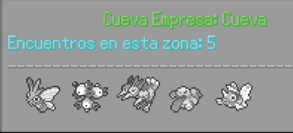
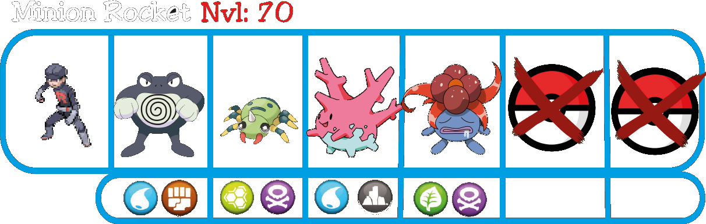
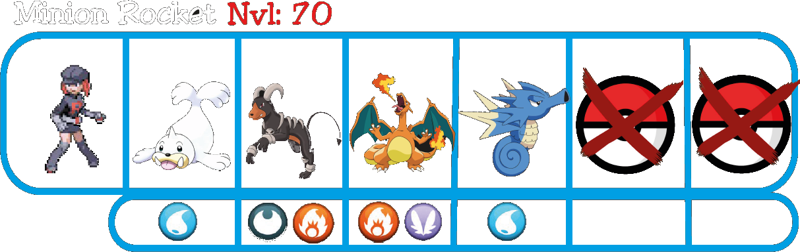
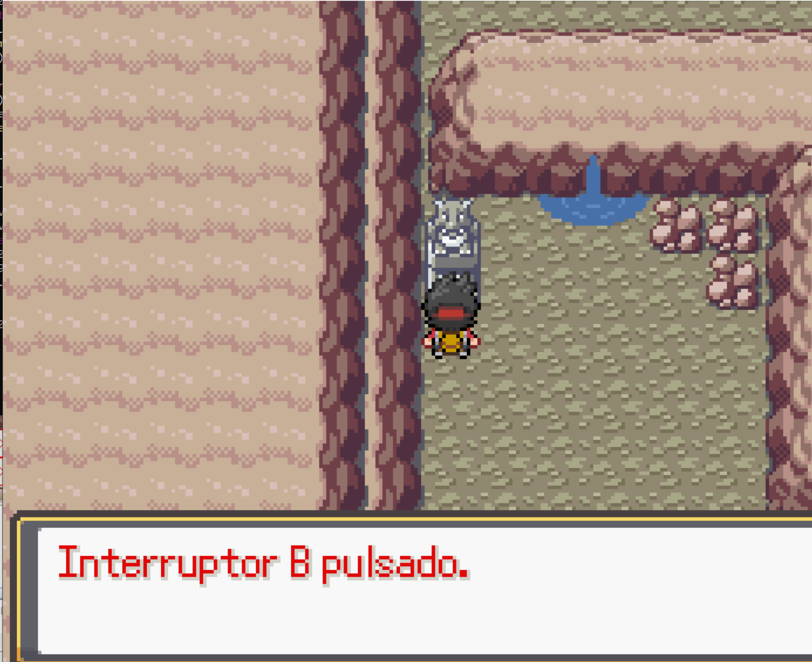
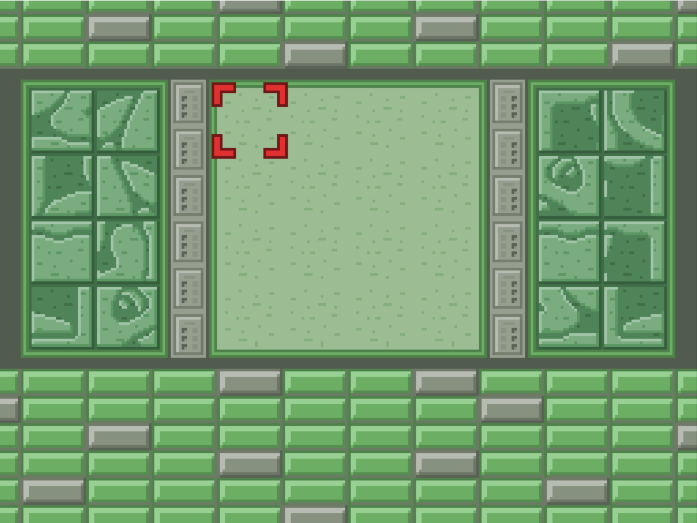
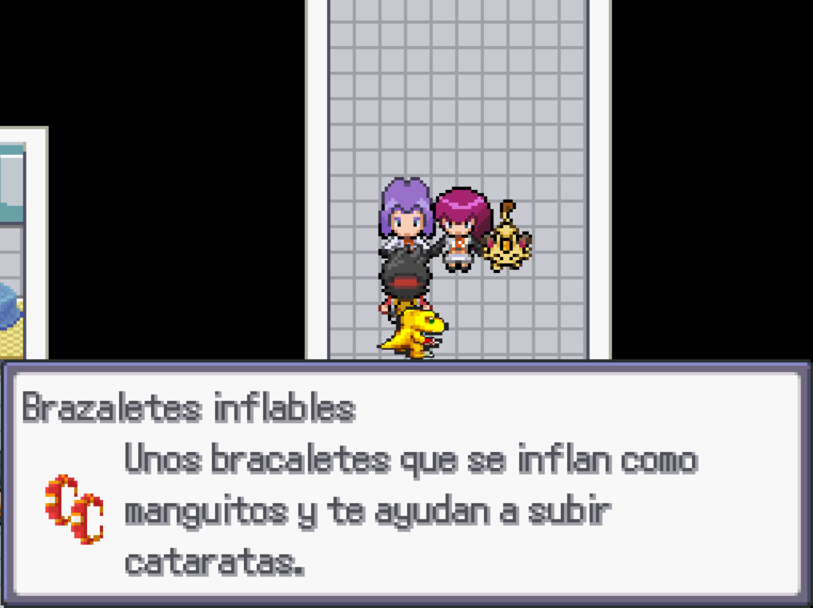
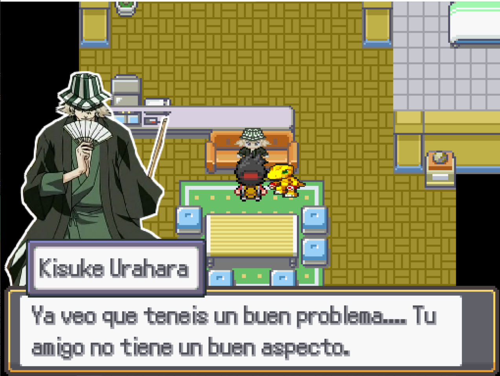
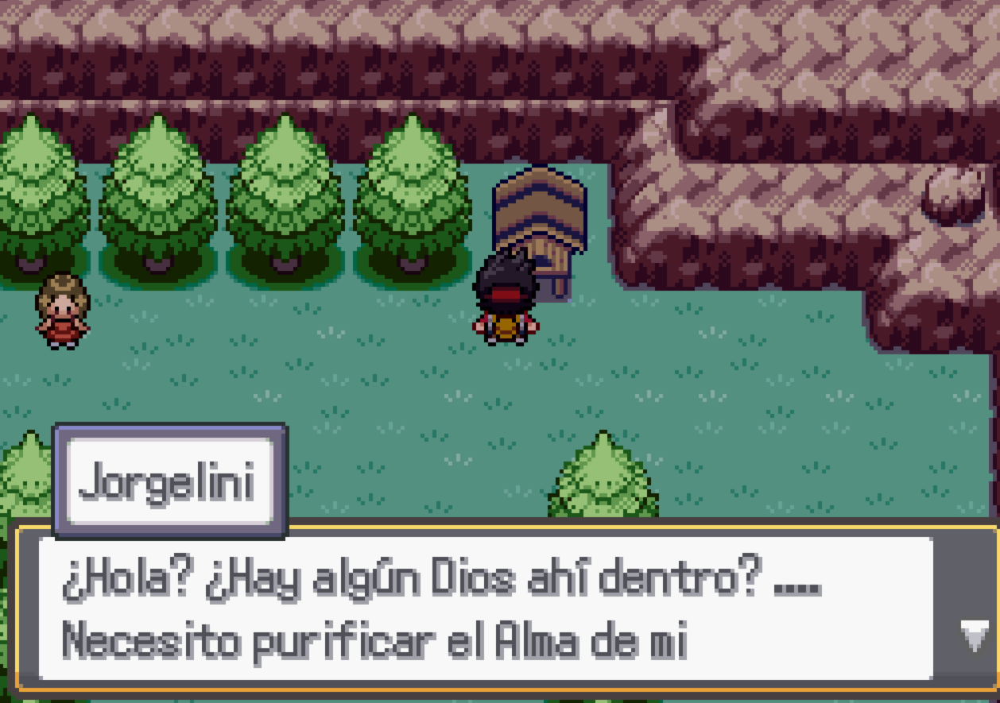

Cueva Rocket
En esta zona podrás capturar 2 Pokemoitos en lugar de uno solo.
Después de usar las dos oportunidades te encontrarás con los dos primeros enemigos.

Ahora tendrás que ir sobre el agua, por la zona Norte hasta llegar a una plataforma en la que habrá un cofre y unas escaleras.
Baja por ellas y aparecerás en otro lado de la cueva.
Tendrás que abrirte paso peleando con un miembro del Team Rocket, después usa el martillo de Thor para romper una pequeña roca agrietada y busca una estatua, tendrá escondido un botón que debes pulsar.
A continuación, tendremos que volver por donde hemos venido y esta vez, ir por la zona sur del agua. Nos llevará a una pequeña costa en la que si nos dirigimos hacia el sur llegaremos al final de la cueva, pero de momento no nos interesa.
Giraremos hacia el Oeste cortando un arbusto para encontrar la segunda estatua y un miembro del Team Rocket.
Al pulsar el botón habremos desbloqueado unas escaleras ocultas en la zona del agua, sube por donde has venido y las encontrarás fácilmente.
Cruzando el agua y subiendo a la plataforma encontrarás una bajada a otra parte de la cueva, siguiendo el camino te encontrarás con una roca agrietada y detrás un rompecabezas como el de la Cueva Rocosa.
Al completarlo, se abrirá un camino a la zona Norte. Allí encontraras al Pokemoito Legendario que todos los miembros del Team Rocket andan buscando.
Después de intentar capturarlo, ya podrás volver a la zona anterior de la cueva y cruzar la puerta Sur donde antes nos desviamos para pulsar los interruptores.
Sala del Jefazo
Entrando en la Sala del Jefazo encontrarás una chica enfermera que está secuestrada, se ofrecerá a curar a tus Pokemoitos, así estarás preparado para el combate final, sigue el camino y llegarás a la entrada.
Tras una pequeña charla, lucharás contra él.
Después de derrotarle, revelará que su nombre es DeathGun y demostrará su locura intentando matarte a disparos, pero justo cuando estás a punto de morir, aparecen tus inesperados aliados..
Llegada la hora de huir del lugar, tu compañero seguirá dolorido después del golpe recibido por Piedmon y te encontrarás con Jessie y James, quienes te dirán que fueron ellos quienes te trajeron la ayuda como prometieron, después te ayudarán a escapar y te darán un regalo.
Una vez fuera de la empresa, te dirigirás al Centro Pokemoito donde te dirán que no pueden curar a tu compañero, pero que tal vez Urahara si pueda, tendrás que ir hacia su tienda y hablar con él.
Urahara notará el problema rápidamente y se ofrecerá a ayudarte, si tu compañero está en su fase Oscura, te dirá que su alma está corrupta como la de un Hollow y que tienes que purificar su alma antes de poder curarle. Si no está en su fase oscura, no serán necesarios los siguientes pasos.
Ve al Santuario de la Ruta 2, tendrás que pedirle al Dios que habita el Santuario que purifique el alma de tu compañero.
El Dios del santuario te preguntará si realmente quieres deshacerte de la oscuridad de tu compañero para siempre, o solo temporalmente. También te advertirá que una limpieza permanente tendrá un coste mucho mayor.
Si eliges una limpieza permanente, te dirá que debes sacrificar un Pokemoito, un alma por otro alma, y nunca más volverá a su forma Oscura.
En cambio, si eliges la opción de limpiar su alma temporalmente, el Dios se reirá complaciente al sentir tu avaricia y te dirá que lo hará sin pedirte nada a cambio, tendrás que volver cuando hayas terminado con Urahara para recuperar su oscuridad a cambio de algo.
Al volver con Urahara, te advertirá de que será un proceso peligroso. Sigue sus indicaciones y adéntrate en su subterráneo oculto.
Entrada al subterráneo de Urahara, oculta tras una librería. Tienes que quitar el libro amarillo de la estantería de la izquierda para abrir el camino.
Cruzando la puerta, te encontrarás en el subterráneo, encontrarás a Urahara distinto y él te dirá que es debido a que el sótano es un espacio entre el mundo espiritual y el mundo humano.
Al terminar la explicación, se lanzará a atacarte con rapidez usando su Zampakutó, te dirá que la próxima vez no se frenará y volverá al ataque, haciéndote sangrar frente a Agumon, quien se acercará a ti llorando por su impotencia.
Sin embargo eso no frena a Urahara, quien te lanza un potente ataque.
Agumon corriendo hacia ti al verte herido.
Wargreymon protegiéndote del ataque de Urahara.
Con la ayuda de ese último ataque, Agumon es llevado al límite fisico y mental, consiguiendo su nueva forma y recuperándose totalmente.
Con la nueva forma de Agumon, es hora de desafiar a la Liga Pokemoito. Aunque si elegiste eliminar su oscuridad de forma temporal, puedes volver al Santuario de la Ruta 2 para recuperarla y obtener a BlackWargreymon.